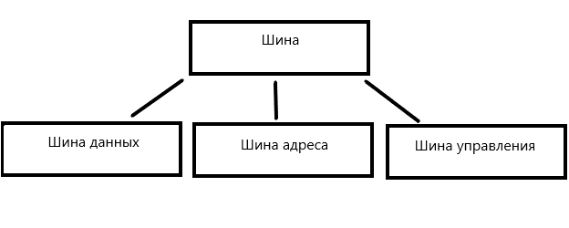
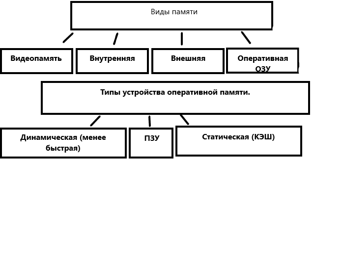
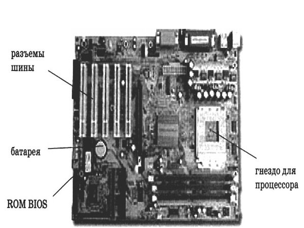
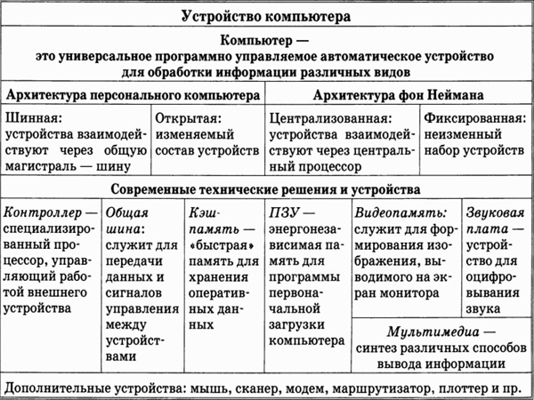

Архитектура персонального компьютера
Архитектура компьютеров старого поколения
Шина

Память

Устройство материнской платы
- Гнездо для процессора.
- Базовая система ввода/вывода (ROM BIOS).
- Гнезда модулей оперативной памяти DRAM.
- Разъемы шины.
- Микросхемы системной логики.
- Батарея
Материнская плата

Устройства ввода и вывода
Система основных понятий

Различия между первыми компьютерами и новыми
- Вместо процессора имеем центральный процессор.
- Вместо одного устройства ввода информации имеем группу устройств неопределенного состава (аналогично и для устройств вывода).
- Появились новые элементы архитектуры , такие как видеопамять , шина , контроллер.
- Контроллер - это специализированный процессор , управляющий работой вваренного ему внешнего устройства.